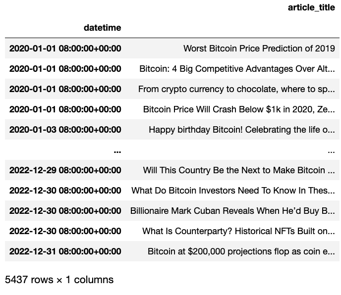
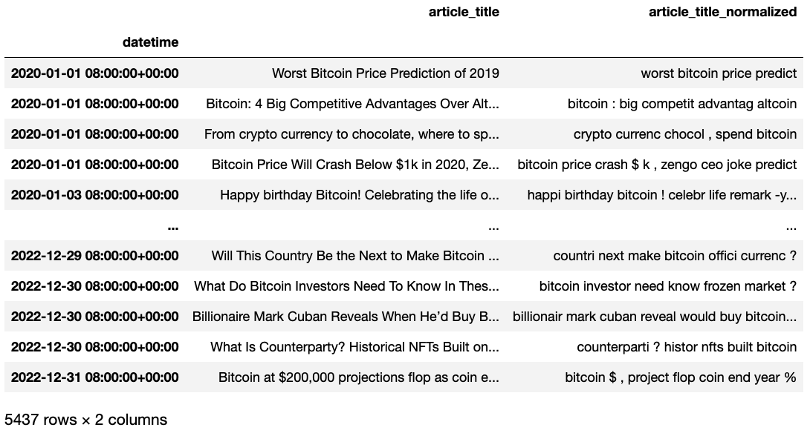
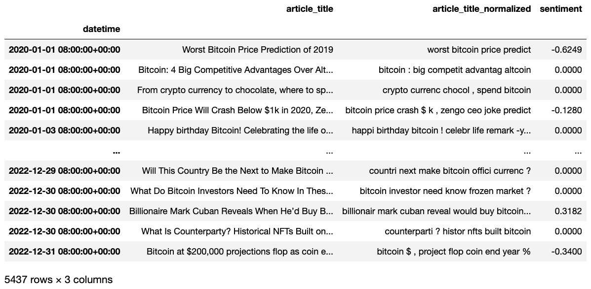
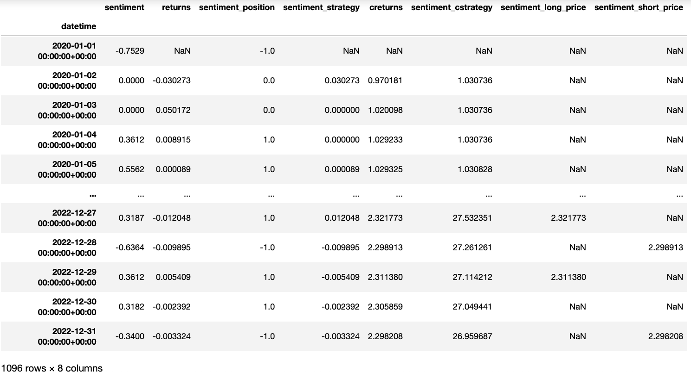
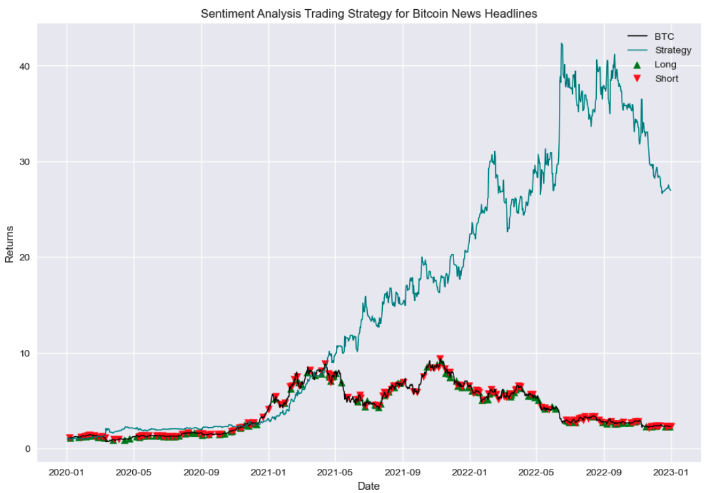

News Sentiment Analysis For Algorithmic Trading

This project involves web scraping bitcoin news articles, analyzing
their sentiment using natural language processing (NLP) techniques and building a strategy around this
data. The process and parameters are then optimized to improve profitability. The main goal of this
project is to develop signals that can be used for algorithmic trading. The methodology for the backtest
is outlined
below.
- The first step is to gather headlines related to "bitcoin" by web scraping news websites. I downloaded roughly 100 articles per day, and consolidating them into a single dataframe. 
- Next, I normalize the scraped text by applying techniques such as contraction fixing, stemming, and tokenization. This can imrpove the accuracy of sentiment analysis by simplifing the input. 
- I then conducted sentiment analysis on the normalized text using a combination of pre-trained libraries and custom-built models, including logistic regression and naive Bayes. You can see a sentiment score below 
- Now I have the sentiment, I can then create a trading strategy based on the results. I experimented with using moving averages, minimum/maximum values for trading, and other techniques to optimize the strategy. 
- After thorough testing and optimization, here is a chart for the most profitable version. I intend to continue optimizing and testing and hopefully launch this to test on market if results look promising. 